Candidata locale 770 · 9 settembre 2026 · V48 pubblicata preservata
| Partizione | Coppie | Δ PASS medi | Δ MOVE medi | Δ cassa media | Gate locali |
|---|---|---|---|---|---|
| development | 6 | -23.0 | 0.0 | 3.0 | SUPERATI |
| validation | 4 | -23.0 | 0 | 3.0 | SUPERATI |
Replay esposto selezionato per il picco D29, non per esito economico. 719/719 azioni riprodotte. Le categorie descrivono rifiuti osservati; non sono una certificazione che tutto quel lavoro fosse evitabile.
| Giorno | PASS | Per persona | Categorie |
|---|---|---|---|
| 2 | 69 | {"1": 19, "3": 23, "4": 13, "2": 11, "0": 3} | {"opening_teacher_or_governor": 69} |
| 11 | 56 | {"8": 12, "3": 11, "6": 11, "7": 4, "11": 9, "5": 4, "0": 1, "1": 1, "4": 1, "9": 1, "10": 1} | {"opening_teacher_or_governor": 56} |
| 12 | 51 | {"1": 7, "4": 6, "5": 1, "10": 2, "7": 9, "3": 6, "6": 4, "8": 4, "2": 3, "12": 3, "0": 2, "9": 2, "11": 2} | {"waiting_observed_input": 6, "reservation_rejection_present_not_proven_causal": 11, "prepare_rejection_resources_time_or_policy": 34} |
| 13 | 50 | {"8": 8, "9": 4, "10": 4, "12": 9, "6": 5, "0": 4, "7": 4, "2": 3, "3": 3, "4": 2, "5": 2, "11": 2} | {"waiting_observed_input": 3, "reservation_rejection_present_not_proven_causal": 47} |
| 14 | 44 | {"10": 6, "1": 6, "12": 2, "11": 7, "0": 5, "7": 5, "3": 4, "5": 2, "8": 2, "9": 2, "2": 1, "4": 1, "6": 1} | {"waiting_observed_input": 3, "reservation_rejection_present_not_proven_causal": 19, "no_offer_unknown_useful_work": 20, "prepare_rejection_resources_time_or_policy": 2} |
| 15 | 45 | {"12": 6, "6": 6, "0": 10, "1": 4, "4": 4, "5": 3, "10": 3, "2": 2, "3": 2, "7": 2, "8": 2, "11": 1} | {"waiting_observed_input": 1, "reservation_rejection_present_not_proven_causal": 44} |
| 29 | 135 | {"12": 16, "0": 15, "7": 15, "9": 15, "10": 15, "3": 12, "6": 12, "5": 11, "1": 9, "8": 7, "2": 6, "4": 2} | {"reservation_rejection_present_not_proven_causal": 89, "no_offer_unknown_useful_work": 46} |
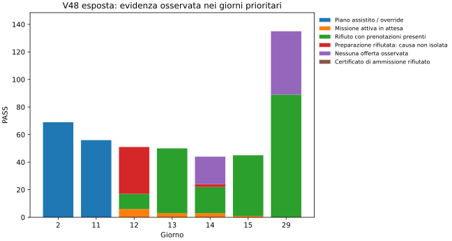
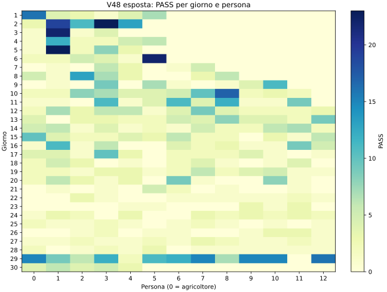
Tutti i 1.074 eventi PASS, con persona, posizione, inventario, missione e tentativi. Una prenotazione presente durante un rifiuto non prova che ne sia la causa. La classe preparazione raggruppa risorse, tempo e policy senza separarli causalmente; nessuna offerta non significa nessun lavoro utile.
Provenienza verificata dell’avvio: tutti i 69 PASS di D2 e 55 dei 56 di D11 sono già nella tabella fissa ROUTINE_ACTIONS. Un PASS D11 è aggiunto dagli override. L’assenza di un lavoro pianificato nella tabella non dimostra assenza di lavoro utile nello stato osservato. Conteggi per persona dei 38 replay esposti: nessuna nuova validazione esterna.
D2 e D11 appartengono all’avvio assistito: le revisioni A–D entrano dopo D11; F interviene in D2. La causa interna delle singole attese del teacher non è interamente identificata; la ripetitività non basta a certificarne l’evitabilità. D12–D15 restano un problema aperto di assegnazione e pianificazione; F non lo modifica. D29: 89 rifiuti con prenotazione e 46 assenze di offerte; i tentativi sui servizi locali e sulle assunzioni per cicli impossibili sono stati separati e respinti; F non interviene su D29.
| Policy | Cassa | PASS | MOVE |
|---|---|---|---|
| V48 | 99574.0 | 1066 | 3459 |
| Solo recupero locale | 99603.0 | 1058 | 3459 |
| V49F completa | 99577.0 | 1043 | 3459 |
| KPI medio per partita | V48 | V49F | Δ |
|---|---|---|---|
| cash | 92,205.333 | 92,208.333 | +3.000 |
| pass_count | 1,069.333 | 1,046.333 | -23.000 |
| share | 14.730 | 14.459 | -0.271 |
| slots | 7,259.667 | 7,236.667 | -23.000 |
| move | 3,468.667 | 3,468.667 | +0.000 |
| hire_cash | 7,471.000 | 7,468.000 | -3.000 |
| FEED | 317.000 | 317.000 | +0.000 |
| CARE | 283.333 | 283.333 | +0.000 |
| WATER | 887.000 | 887.000 | +0.000 |
| HARVEST | 385.000 | 385.000 | +0.000 |
| losses | 3.333 | 3.333 | +0.000 |
| escapes | 0.000 | 0.000 | +0.000 |
| Seed | Posto | Δ cassa | Δ cassa % | Δ PASS | Δ MOVE |
|---|---|---|---|---|---|
| 180903001 | 0 | 3.0 | 0.003 | -23 | 0 |
| 180903001 | 1 | 3.0 | 0.003 | -23 | 0 |
| 180903002 | 0 | 3.0 | 0.003 | -23 | 0 |
| 180903002 | 1 | 3.0 | 0.003 | -23 | 0 |
| 180903003 | 0 | 3.0 | 0.005 | -23 | 0 |
| 180903003 | 1 | 3.0 | 0.005 | -23 | 0 |
| Controllo | Esito |
|---|---|
| complete_errors_incomplete | SUPERATO |
| pass_absolute | SUPERATO |
| pass_share | SUPERATO |
| move | SUPERATO |
| cash_mean | SUPERATO |
| cash_cases | SUPERATO |
| productive_losses | SUPERATO |
| escapes | SUPERATO |
| service_counts | SUPERATO |
| observed_obligation_deficits | SUPERATO |
| Misura | V48 | V49F |
|---|---|---|
| missed_feed | 114 | 114 |
| missed_useful_care | 180 | 180 |
| missed_critical_water | 20 | 20 |
| decay_lost_units | 0 | 0 |
| productive_water_loss_units | 12 | 12 |
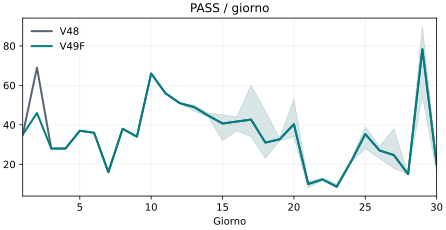
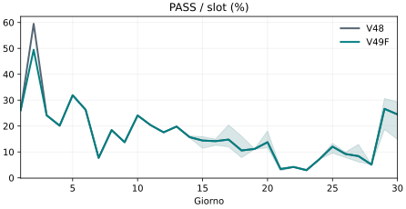
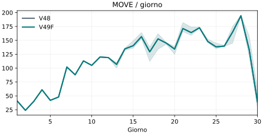
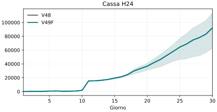
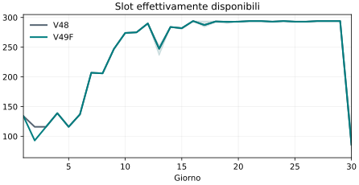
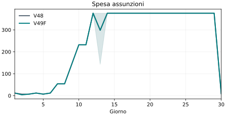
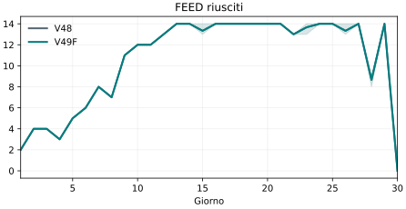
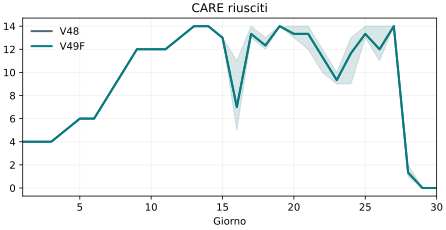
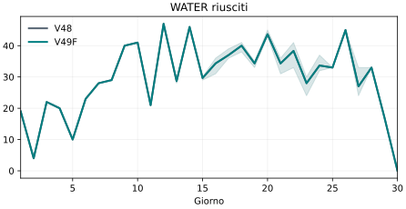
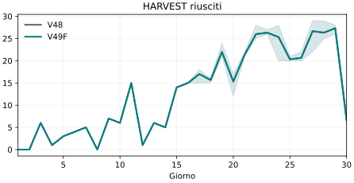
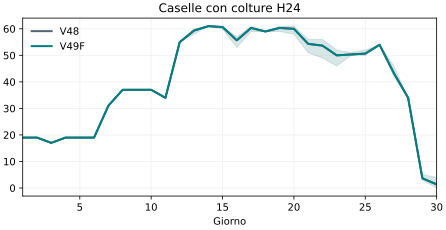
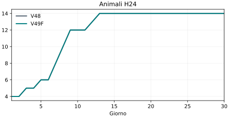
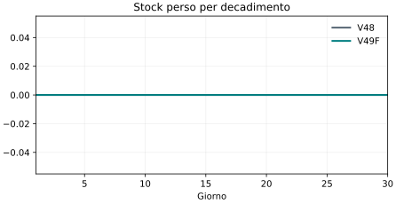
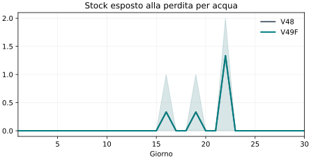
| KPI medio per partita | V48 | V49F | Δ |
|---|---|---|---|
| cash | 53,037.500 | 53,040.500 | +3.000 |
| pass_count | 1,108.500 | 1,085.500 | -23.000 |
| share | 15.264 | 14.994 | -0.269 |
| slots | 7,262.000 | 7,239.000 | -23.000 |
| move | 3,443.000 | 3,443.000 | +0.000 |
| hire_cash | 7,433.000 | 7,430.000 | -3.000 |
| FEED | 321.000 | 321.000 | +0.000 |
| CARE | 286.500 | 286.500 | +0.000 |
| WATER | 881.500 | 881.500 | +0.000 |
| HARVEST | 381.500 | 381.500 | +0.000 |
| losses | 4.000 | 4.000 | +0.000 |
| escapes | 0.000 | 0.000 | +0.000 |
| Seed | Posto | Δ cassa | Δ cassa % | Δ PASS | Δ MOVE |
|---|---|---|---|---|---|
| 260909101 | 0 | 3.0 | 0.008 | -23 | 0 |
| 260909101 | 1 | 3.0 | 0.008 | -23 | 0 |
| 260909102 | 0 | 3.0 | 0.004 | -23 | 0 |
| 260909102 | 1 | 3.0 | 0.004 | -23 | 0 |
| Controllo | Esito |
|---|---|
| complete_errors_incomplete | SUPERATO |
| pass_absolute | SUPERATO |
| pass_share | SUPERATO |
| move | SUPERATO |
| cash_mean | SUPERATO |
| cash_cases | SUPERATO |
| productive_losses | SUPERATO |
| escapes | SUPERATO |
| service_counts | SUPERATO |
| observed_obligation_deficits | SUPERATO |
| Misura | V48 | V49F |
|---|---|---|
| missed_feed | 60 | 60 |
| missed_useful_care | 108 | 108 |
| missed_critical_water | 16 | 16 |
| decay_lost_units | 0 | 0 |
| productive_water_loss_units | 8 | 8 |
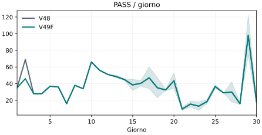
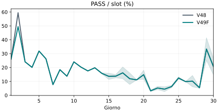
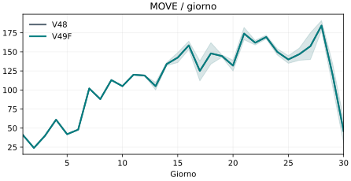
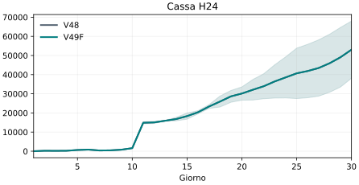
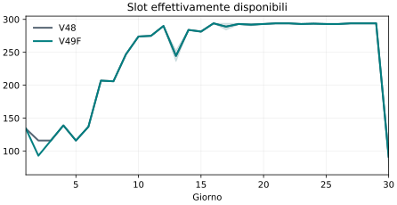
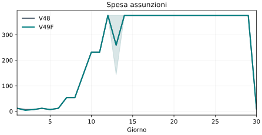
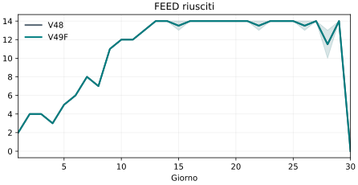
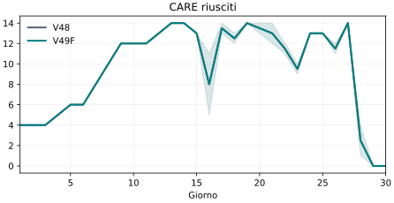
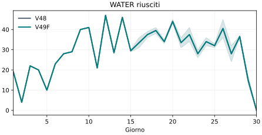
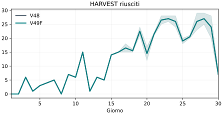
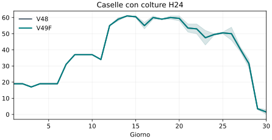
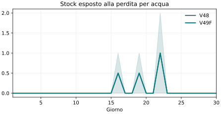
| Seed | Posto | Δ cassa | Δ PASS |
|---|---|---|---|
| 180903001 | 0 | 403.0 | -71 |
| 180903001 | 1 | 403.0 | -71 |
| 180903002 | 0 | 514.0 | -71 |
| 180903002 | 1 | 514.0 | -71 |
| 180903003 | 0 | -1763.0 | -18 |
| 180903003 | 1 | -1763.0 | -18 |
La revisione A ha fallito il gate economico. Anche B, con recupero limitato all’ultimo tick e riduzione massima di un manovale, perde 924 di cassa e aggiunge 19 MOVE sul seed 180903003 posto 0. C è respinta (−2.167 cassa, +35 PASS). D migliora la cassa ma aumenta MOVE medi di 6,33 e fallisce quel gate. E ometteva la diversa posizione di ingresso del manovale ed è scartata per errore di rimappatura, non usata come prova di miglioramento. F corregge la geometria e interviene solo sull’avvio D2. Le correzioni sono state fatte sui soli seed di sviluppo, prima di aprire la validazione. Report integrale A.
Comandi e inventario delle prove · Equivalenza degli stati dopo D2 · Integrità della baseline e del motore.
Bundle candidata SHA-256: eabe7bc782fcffab354ffbe9f454bdc1a1b5d37419e30b957c5d260193c96f31. Baseline e 18 sorgenti congelati controllati dalla verifica di parità. Parità registrate: [{"input": "development_v49f_180903001_0.json", "seat": 0, "seed": 180903001, "actions": 719, "mismatches": 0, "bundle_sha256": "eabe7bc782fcffab354ffbe9f454bdc1a1b5d37419e30b957c5d260193c96f31", "frozen_v48_intact": true, "runtime_note": "Offline, no instrumentation; may overlap other processes. First call includes loading policy.", "max_seconds": 20.377098899916746, "overage": 54.00826939952094}, {"input": "development_v49f_180903001_1.json", "seat": 1, "seed": 180903001, "actions": 719, "mismatches": 0, "bundle_sha256": "eabe7bc782fcffab354ffbe9f454bdc1a1b5d37419e30b957c5d260193c96f31", "frozen_v48_intact": true, "runtime_note": "Offline, no instrumentation; may overlap other processes. First call includes loading policy.", "max_seconds": 10.855421099928208, "overage": 57.72280459990725}].
Le curve misurano richieste PASS/MOVE su persone presenti prima del batch, servizi effettivamente riusciti tramite engine, cassa H24 e cassa finale separatamente. Ultimo giorno: 23 transizioni, non 24. Ogni ledger ricostruisce i saldi dei due giocatori per tutte le 719 transizioni. I deficit a fine giornata sono misurati dopo i comandi e il decadimento, prima del refresh; la cura utile è una previsione a regole note, non un ricavo garantito. Rimangono fuori dal gate la copertura ottima su tutto il ciclo, tutti gli effetti del mercato futuro e la redditività marginale di ciascun investimento.
Gli audit *_obligations.json riportano per persona costo del percorso pianificato, lavoro già impegnato e comandi realizzati nella finestra residua. I checkpoint possono sovrapporsi e NON vanno sommati. Nessuna ottimizzazione completa dell’organico: il piano noto di D2 viene eseguito con tre manovali operativi; le correzioni al carico fuori orizzonte non sono attive in F. D11 e i problemi generali D12–D15/D29 restano fuori dalla correzione mirata di F; la sola riduzione dei PASS non autorizza a dichiarare risolto tutto il problema.
Protocollo: PROTOCOL_IT.md · Dati: summary.json · Inventario: candidate_f_manifest.json.